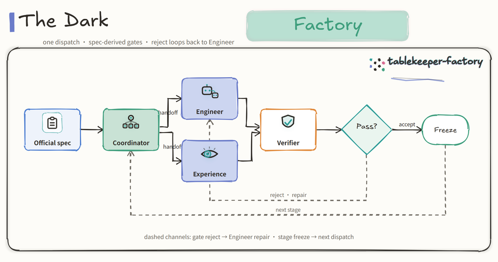

A reservation factory that keeps the guest promise.
When a table closes mid-service, a booking must not be silently moved — the guest’s time and accepted terms are the promise.

| Evidence | Source | Result |
|---|---|---|
| Official harness, stage 1 | final isolated sweep | 120 / 120 |
| Official harness, stage 2 | final isolated sweep | 25 / 25 |
| Official harness, stage 3 | final isolated sweep | 7 / 7 |
| Official harness, stage 4 | final isolated sweep | 6 / 6 |
| Independent stage-4 verifier | combined API suite | 862 / 862 |
| Upgrade / hardened / UI legs | verifier suites | 62 · 5 · 82 / all |
| Reproducibility | fresh public GitHub clone | full chain reproduced |
Counts are checks executed in the published harnesses and verifier suites — not unique requirements, and not a guarantee of hidden judging tests.
stage-4/RUN.md — one-command Docker builddocs/DEMO-RUNBOOK.md — synthetic loopback demodispatch.md, mandates/, docs/handoffs/docs/gates/ — freeze records per stageFACTORY.md — full report incl. interventions